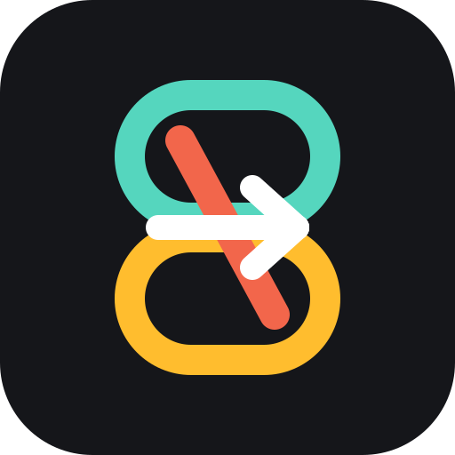

Install once
Run the platform installer for Windows, macOS, Linux, or WSL.

Ayatori NexusCLI Model Switcher & Shared Memory Hub
A unified command-line hub for switching AI coding agents and sharing context across tools.
$ ayatori status
active profile opencode-openrouter
memory layer ~/.ai-cli-switcher/memory.md
workspace codex | claude | opencode
$ ai-use claude-native
switched profile to claude-native
exported shared context to AI_CLI_MEMORY
$ ai-workspace switch claude
attached to Claude without closing Codex
$ ai-report --strict
ready: routes, presets, providers, memoryWhy it exists
Run the platform installer for Windows, macOS, Linux, or WSL.
Switch between native tools, OpenAI-compatible gateways, and local models.
Reuse one neutral context file across Codex, Claude Code, OpenCode, and more.
Use workspace adapters and bridge prompts to move without rebuilding context.
Feature set
Ayatori Nexus focuses on the boring pieces that usually break a multi-agent workflow: shell setup, model routing, provider presets, memory handoff, session launchers, and platform-specific instructions.
ai-use, ai-workspace, and bridge commands for active sessions.
One neutral AI_CLI_MEMORY layer for cross-agent project context.
OpenAI, Anthropic, Gemini, OpenRouter, DeepSeek, Ollama, LM Studio, and more.
Standalone skill module for Codex and a portable layout for other agent platforms.
Try it
curl -fsSL https://raw.githubusercontent.com/YuxuanSun123/cli-model-switcher/main/install.sh | shirm https://raw.githubusercontent.com/YuxuanSun123/cli-model-switcher/main/install.ps1 | iexai-lite